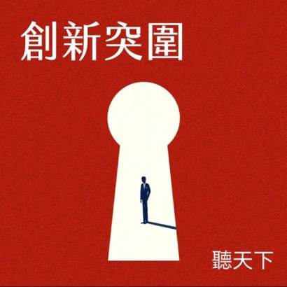

6月
【創新突圍】人才基地計畫2》跨界攜手育才，產學研深根護國基礎 - 聽天下：天下雜誌Podcast
南亞科技參加經濟部工業局「產學研工程人才實務能力卓越基地計畫」(簡稱人才基地計畫)，並受邀出席天下雜誌的【聽天下︱創新突圍】Podcast節目，就「跨界攜手育才．產學研深根護國基礎」主題分享公司對人力需求的規劃，以及如何透過產、學、研三方合作來育才、求才。
南亞科技副總經理吳志祥在節目中說道:「南亞科技認同與支持人才基地計畫。人才基地是透過產學研合作的方式，利用國家級前瞻產專計畫，來培育在校學生銜接產業需要的實務實作能力。過去兩年，公司安排上百位學生參訪公司，了解公司運作，去年也建議主辦單位舉辦『記憶體產業未來發展態勢』講座，由幾家記憶體公司共同與學生分享，達到共好、共享、促進整體產業發展的目的。今年也參與『新興運算架構AI晶片技術』科專計畫，透過此計畫協同培育幾位科大學生了解業界的需求與實作。藉由人才基地這樣的產學研合作模式，南亞科技不以吸引人才為單一指標，而是期待深耕台灣記憶體人才培育，善盡企業社會責任。」
未來，南亞科技也會持續規劃與學校的產學合作，透過產官學研等多方著手，擴大人才基數，將能持續培育半導體多元人才投入產業。